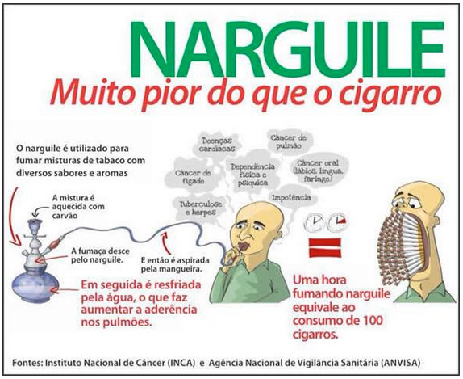

A Organização Mundial da Saúde (OMS) estima que apenas uma hora de uso equivale a tragar 100 cigarros. O consumo pode levar ao aparecimento de câncer de pulmão, doenças cardíacas e respiratórias, além de também causar dependência.
Estudos associam o uso de narguilé ao desenvolvimento de câncer de pulmão, doenças respiratórias, doença periodontal (da gengiva) e com o baixo peso ao nascer, além de expor seus usuáriosa de nicotina em concentração que causa dependência.
O estudo também apontou que a hipóxia cerebral deixa as pessoas com fala arrastada, movimentos lentos, tonturas, leve tremor, falta de autocontrole, uma sensaçãode euforia, diminuição da visão e diminuição da capacidade de identificar cores.
Esses efeitos tendem a se manter de quatro a seishoras depois do uso. 